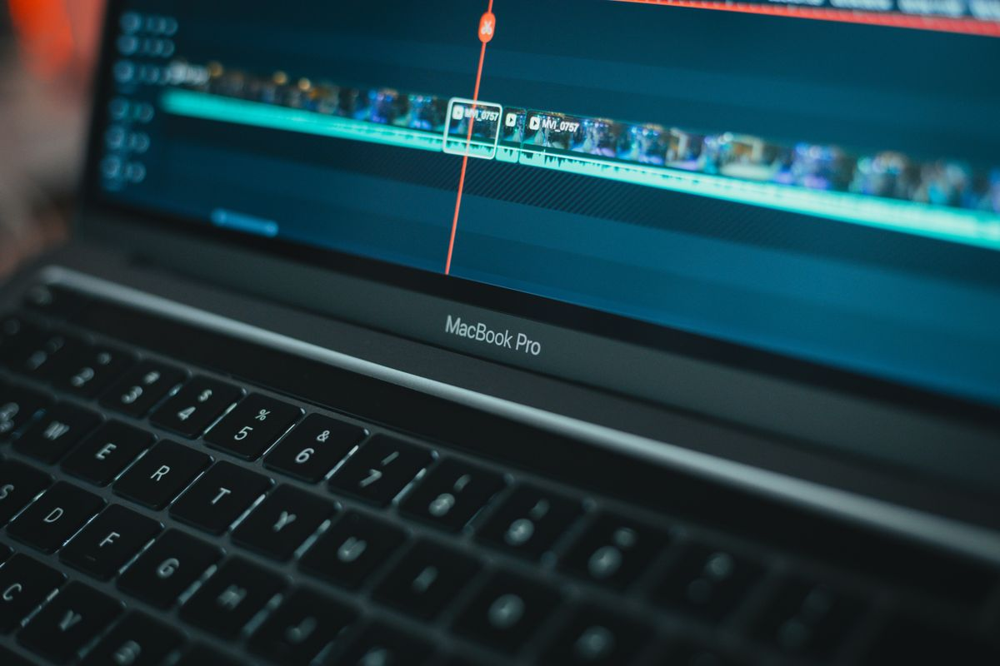
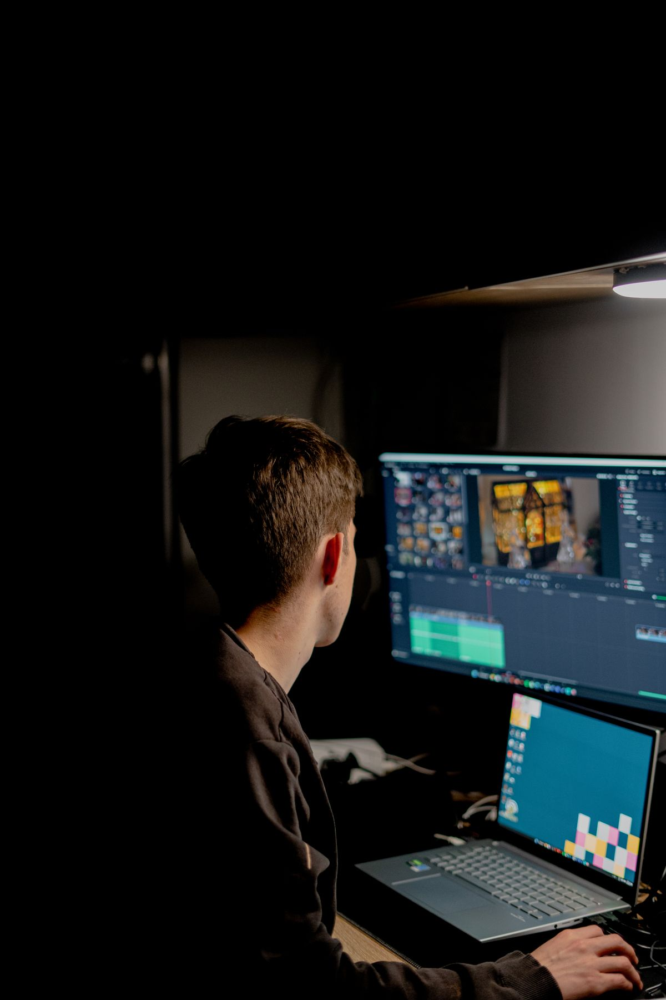

Kdenlive adalah editor video gratis dan open source yang bisa menggantikan Adobe Premiere Pro buat edit video YouTube, tugas kuliah, sampai konten TikTok, tanpa langganan bulanan dan tanpa watermark. Kamu bisa mengunduhnya resmi di kdenlive.org untuk Windows, macOS, dan Linux, lalu langsung mengedit di timeline multi track seperti di Premiere Pro.
Kdenlive adalah editor video gratis dan open source dari komunitas KDE yang berjalan di Windows, macOS, Linux, dan BSD, tanpa biaya lisensi, tanpa akun, dan tanpa watermark pada hasil ekspor. Timeline-nya multi track dengan jumlah track video dan audio yang tidak dibatasi, lengkap dengan efek, transisi, editor judul, dan alat subtitle. Fitur yang menolong pemula antara lain proxy editing untuk video berat, speech to text berbasis Whisper untuk membuat subtitle otomatis, dan multicam untuk video dari beberapa kamera. Versi terbaru 26.08.2 rilis Oktober 2026. Batasnya juga jelas: proyek Premiere Pro tidak bisa diimpor, plugin dan template Motion Graphics Adobe tidak ikut pindah, dan tidak ada padanan After Effects di dalamnya. Jadi Kdenlive paling cocok buat kamu yang mengedit sendiri, dari video YouTube sampai tugas kuliah, dan ingin berhenti membayar langganan bulanan.
Kenapa Premiere Pro terasa mahal buat pemula?
Premiere Pro dijual sebagai langganan, bukan lisensi sekali beli. Per November 2026, paket aplikasi tunggalnya dipatok 22,99 dolar AS per bulan pada paket tahunan yang ditagih bulanan, atau sekitar 275,88 dolar AS setahun bila tarifnya tidak berubah. Angka itu harga di Amerika Serikat sebelum pajak, dan harga di Indonesia bisa berbeda di halaman checkout Adobe. Buat editor yang kliennya sudah memakai proyek Adobe, harga itu masuk akal. Buat kamu yang baru belajar, mengedit video YouTube seminggu sekali, atau mengerjakan tugas kuliah, tagihan itu berjalan terus walau di bulan itu kamu tidak mengedit sama sekali. Berhenti bayar berarti berhenti bisa membuka aplikasinya. Di titik inilah alternatif gratis yang serius jadi menarik, dan Kdenlive adalah salah satu yang paling matang.
Apa saja yang bisa Kdenlive lakukan?
Kdenlive bukan editor sederhana yang cuma bisa memotong klip. Ia editor non linear lengkap dengan timeline multi track, dan jumlah track video serta audionya tidak dibatasi. Kamu bisa menyusun video berlapis, menambahkan teks, musik, dan efek suara di track yang berbeda, lalu mengatur transisi antar klip seperti di editor berbayar. Efek dan transisinya banyak, dan ada alat warna dengan kurva dan scopes, plus editor judul dan alat subtitle bawaan. Dua fitur yang paling terasa buat pemula adalah proxy editing dan speech to text. Proxy editing membuat salinan ringan dari video berat supaya preview di laptop biasa tetap mulus, dan hasil akhirnya tetap memakai berkas asli. Speech to text memakai Whisper untuk mengubah suara di video jadi teks subtitle otomatis, yang lalu bisa kamu perbaiki kata per kata. Kdenlive juga mendukung multicam, jadi video dari dua kamera bisa kamu potong dari satu timeline. Semua ini berjalan tanpa akun, tanpa batas resolusi, dan tanpa watermark. Syarat perangkatnya pun ramah: dokumentasinya menyebut 8 GB RAM sudah cukup buat edit video HD, dan aplikasinya tersedia untuk Windows 10 ke atas, macOS 13 ke atas, serta Linux 64 bit.

Bagaimana cara mulai memakai Kdenlive?
Mulainya tidak ribet, dan kamu bisa selesai dalam satu sore.
- Unduh dari situs resminya di kdenlive.org. Pilih penginstal sesuai sistem operasimu, Windows, macOS, atau Linux. Hindari mengunduh dari situs lain supaya kamu tidak mendapat berkas yang sudah diubah orang.
- Buka aplikasinya dan buat proyek baru. Atur profil proyek sesuai videomu, misalnya 1080p 30 fps buat YouTube.
- Seret klip videomu ke panel Project Bin, lalu susun di timeline. Potong bagian yang tidak perlu dengan alat razor, geser klip ke track audio terpisah bila perlu.
- Tambahkan judul lewat editor judul bawaan dan subtitle lewat alat subtitle. Kalau videomu panjang, nyalakan proxy clip supaya preview tetap ringan.
- Ekspor lewat menu Render. Pilih preset sesuai tujuanmu, misalnya MP4 H.264 untuk YouTube, lalu tunggu sampai render selesai. Berkas hasilnya tidak membawa watermark apa pun.
Satu kebiasaan yang menolong: simpan proyekmu berkala dan aktifkan pencadangan otomatis di pengaturan. Kdenlive rutin merilis versi baru, tapi proyek video tetap pekerjaan berjam-jam yang sayang hilang karena laptop mati mendadak.
Kapan sebaiknya kamu tetap pakai Premiere Pro?
Ada tiga keadaan ketika Premiere Pro masih jadi pilihan yang masuk akal. Pertama, kamu bekerja dalam tim yang sudah memakai proyek Adobe, karena berkas proyek Premiere tidak bisa dibuka di Kdenlive dan harus disusun ulang dari awal. Kedua, kamu bergantung pada template Motion Graphics, plugin berbayar, atau After Effects, karena Kdenlive tidak punya padanan langsung untuk ketiganya. Ketiga, kamu butuh fitur kolaborasi yang sudah menyatu dengan alur kerja tim Adobe. Di luar tiga keadaan itu, kebanyakan kebutuhan edit video harian sudah tercakup Kdenlive. Dan kalau laptopmu berat menjalankan editor lain, Kdenlive layak dicoba karena syarat perangkatnya ramah: 8 GB RAM sudah cukup buat edit video HD. Kalau kamu ragu, coba dulu satu proyek penuh di Kdenlive sebelum memutuskan berhenti langganan.

Jadi, kalau langganan Premiere Pro terasa berat di kantong dan kamu mengedit sendiri, Kdenlive layak dicoba dulu. Gratis, legal, dan fiturnya cukup buat video YouTube, tugas, sampai konten harian. Unduh versi terbarunya di kdenlive.org, kerjakan satu proyek sampai selesai, dan rasakan sendiri apakah alurnya cocok dengan caramu mengedit. Per November 2026, itulah jalan paling murah buat berhenti membayar langganan tanpa berhenti berkarya.
Baca juga: 5 Alternatif Gratis CapCut Tanpa Watermark, dari HP sampai Laptop | DaVinci Resolve Gratis: Software Edit Video Kelas Profesional yang Dikira Berbayar | 7 Website Gratis yang Kelihatannya Berbayar, Padahal Memang Gratis | Lihat semua artikel Other | Kumpulan artikel riset di blog
Sumber dan Info Resmi
Angka, harga, dan fitur di artikel ini merujuk ke sumber berikut:
- Kdenlive: editor video gratis dan open source, berjalan di Linux, Windows, macOS, dan BSD; fitur meliputi asset management, editing, efek dan transisi, warna, serta subtitle dan teks; bagian dari komunitas KDE.
- Explore AI Directory: lisensi GPL-3.0-only, tanpa biaya lisensi, registrasi, atau langganan; versi terbaru 26.08.2 tanggal 8 Oktober 2026; syarat perangkat 4 inti CPU untuk HD, 8 inti untuk 4K, RAM 8 GB atau 16 GB.
- DaVinci Resolve Club: Kdenlive 26.08.2 rilis Oktober 2026; Windows 10 (1809 atau lebih baru), macOS 13 atau lebih baru, Linux 64 bit; 8 GB RAM untuk HD; speech to text Whisper dan harga gratis tanpa tier berbayar.
- Free Alternatives: Kdenlive tanpa watermark, tanpa batas resolusi atau frame rate, tanpa sign-in; proyek Premiere tidak bisa diimpor.
- Joseph Nilo: Premiere Pro 22,99 dolar AS per bulan pada paket tahunan yang ditagih bulanan, dicek 23 September 2026; total 275,88 dolar AS setahun pada tarif yang sama.
- BestStacked: harga Premiere Pro 22,99 dolar AS per bulan per 14 Oktober 2026; uji coba gratis 7 hari.
- Wikipedia: Kdenlive editor gratis open source berbasis MLT, KDE, dan Qt; lisensi GPL-3.0-or-later; multi track tanpa batas jumlah track; tersedia di FreeBSD, macOS, Windows, dan Linux.
- SoftZone: ditopang donasi sukarela; ada Glaxnimate dan mode multicam; tidak ada padanan langsung After Effects.
- Open Source Adobe: Kdenlive gratis berlisensi GPL untuk Windows, macOS, dan Linux; timeline multi track, proxy, efek, judul, dan subtitle; plugin Premiere dan template MOGRT tidak ikut pindah.
- Filmora: Premiere Pro tidak tersedia native di Linux; Kdenlive gratis dengan multi track, proxy, dan efek.